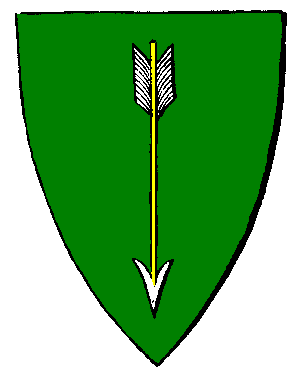

|

|
Das schwarze Brett
|
|
| Übersicht,
Geschichten (RPG) |
|
Der lebende Tote (2  ) )
|
| Jason Montfort of Anger Castle (RIP) |
Feste Gallup, Hauptstadt der Streiter vom Sturmkap auf Long Island.
Ein vorsichtiges klopfen an der ehernen Tür zu seinem Schlafgemach reißt Jason aus einem unruhigen Schlaf. Seit Tagen quälen ihn grausame Träume, Träume die ihm zeigen wie er seinen Tod findet. Zahlreiche Gebete zu Urvan seinem Gott wurden nicht erhört Gespräche mit guten Freunden blieben Ergebnis los und so quälte er sich Nacht für Nacht auf ein neues. Jason erhebt sich mit leichenblassem Gesicht von seiner Schlafstätte und ruft in Richtung Tür herein, langsam öffnen sich die ehernen Torflügel und sein engster Vertrauter Coille Arthwr betritt den Raum er verbeugt sich vor seinem Herrn und Freund und tritt auf ihn zu. Ich wünsche dir einen guten Morgen! Jason erwiedert den Gruß und erhebt sich von seinem Lager er schaut ihn an und spricht mit schlaftrunkener Stimme Sag mir mein Freund welch kulinarische Einfälltigkeit unser Koch sich heute ausgedacht hat? Coille der den seltsamen sarkastischen Humor seines Herrn gewohnt ist antwortet mit einem lächeln und zuckt mit den Schultern, danach wendet er sich zum gehen, Jason bleibt alleine in seinem viel zu großem Schlafgemach zurück.
2 Stunden später ruft Jason nach seiner Rüstung, schlecht gelaunt vom Frühstück und dem beklemmenden Gefühl etwas zu versäumen lässt er sich die Prunkrüstung anlegen. Kurze Zeit später tritt er vor das große Tor von Anger Castle und wartet auf seine Begleiter die inzwischen die Pferde geholt haben. Es vergehen keine 5 Minuten als sie aus zurückkommen allesamt sitzen sie auf schwarzen Pferden die in der Morgensonne glänzen und glücklich voll tatendrang schnauben. Jason geht zu seinem Pferd Ishariot und tätschelt ihm die mächtigen Flanken, er schwingt sich trotz seiner schweren Rüstung aus Endurium in den Sattel und sprengt in Richtung Sonne davon. Seine Begleiter sehen sich verwundert an so einsilbig hatten sie ihn noch nicht erlebt.
Nach dem allmorgentlichen Rundritt durch das Gebiet der Streiter und einigen Scharmützeln mit Erdwürmern und einigen Goblins führt sie ihr Weg vorbei an einer verlassenen Orkburg die Halbverfallen mitten in der Ebene steht, wie jeden Tag reiten sie noch ein Stück weiter. Bald darauf erreichen sie einen großen Berg es ist der Sturmberg welcher unweit vom Sturmkap selbst hoch in Richtung Himmel ragt. Sie steigen ab und lassen ihre Pferde rasten während sie selbst den beschwerlichen Weg in Richtung Gipfel antreten. Jason der schweigend vor ihnen hertrottet blickt erschrocken auf als plötzlich ein riesiger Ork vor ihm steht. Die Begleiter stellen sich mit gezogenen Schwertern hinter ihren Herren um ihn bei Bedarf zur Hand gehen zu können. Der große Ork zieht sein Bastardschwert und ruft der kleinen Gruppe zu Nun ist eure letzte Stunde gekommen, standhaft hast du dich der Verlockung der Dämonen widersetzt doch nun wirst du dafür bezahlen. Jason zieht indess sein Schwert Abnoba Orkus, eine uralte Klinge von großer Herkunft und ausgezeichneter Machart, die geheimnisvollen Schriftzeichen auf der Klinge leuchten Blutrot als er sich mit dem Schwert in der Hand seinem Gegner stellt, kurze Zeit später liegt der Ork tödlich getroffen auf dem Boden und noch bevor Jason ihm den Todesstoß versetzen kann ertönt ein gewaltiger Schrei, ein Schrei wie ihn tausend gefolterte Seelen nicht erzeugen können ein Schrei durchdringender als alles was er jemals gehört hat, plötzlich sehen sich seine Begleiter und er von Orks umringt sie nehmen den Kampf auf doch schnell wir klar sie sind unterlegen in der Stunde der höchsten Not erinnert sich Jason an die Worte seines Vaters vor dem Untergang der Welt. Damals gab er ihm ein Horn ein Horn das so klein ist wie ein Finger aber so groß sein kann wie ein Mensch, plötzlich als habe er es gerufen liegt das kleine Stück Holz in seiner Hand mit all seiner Kraft hebt er es an den Mund und bläst hinein ein Geräusch wie tausend Donner lässt die Luft vibrieren, Jason voll zuversicht wendet sich wieder dem Kampf zu und muss mit entsetzen feststellen das nur mehr er seine Kriegerin Morag und sein treuer Freund Coille bei ihm sind alle anderen sind gefallen. Für Jason geht eine Welt zu grund niemals hätte er sich gedacht das so etwas passieren hätte können und noch ehe er seine Gedanken ordnen konnte spürt er einen großen Schmerz der von seinem Rücken aufwärts in ihm aufbrandet er dreht sich mit entsetztem Blick um und sieht den Ork an der grinsend mit blutiger Klinge vor ihm steht. War es wirklich möglich das dieser Ork seinen Enduriumpanzer durchdrungen und ihm eine Wunde beigebracht hatte, dies waren seine letzten Gedanken. Stunden oder Tage später öffnet Jason seine Augen er sieht große weiße Flecken die vor seinen Augen tanzen und erst allmählich verschwinden. Ein Gesicht erscheint und spricht zu ihm, es spricht ohne Ton er versteht nicht.
Nun liegt er hier der lebende Tote sein Heiler ist stets um ihn besorgt um sein Wohlergehen und doch wissend das nichts auf dieser Welt den Untergang abwenden kann. Eine Klinge geschmiedet tief im inneren der ewigen Dunkelheit geschmiedete Kling war Jason durch die Rüstung gedrungen und hatte seinen Körper vergiftet. Seine Kräfte begannen zu schwinden. Noch klammert er sich eisern am Leben fest noch schlägt das Herz eines Montforts in ihm doch wie lange? Betrübt versammeln sich die letzten Gebliebenen Helden auf der Burg um die ihrem Herrn der ihnen wie ein Bruder war die letzte Ehre zu erweisen.
Freiherr Jason Montfort of Anger Castle,
Anführer der glorreichen Nation "Streiter vom Sturmkap"
Zur 5. Stunde am 25.Saatmond im Jahre 420 |
19.04.05 21:29
|
|
| Ossian Montfort of Éire Castle (RIP) |
Gerade besuchte ich meinen Bruder am Sterbebett.
Die Wunden scheinen nicht heilbar. Er wird wohl alsbald in die Hallen Urvans eintreten.
Ich schwöre hier und jetzt, dass ich Zeit meines Lebens diese dreckigen und feigen, Dämonenanbetenden Orks, bekämpfen und vernichten werde wo immer ich sie antreffe! Urvan sei mein Zeuge!
Zu einer solch feigen Tat sind auch nur feige, dreckige und verlauste Orks imstande. Einem am Boden liegenden Gegner das Schwert in den Rücken zu rammen. Feiglinge!
Bruder, sei dir Gweiss, dein Tod wird gerächt werden!
Urvan mit Dir!
*sich mit einem Dolch durch die Handfläche schneidet und mit seinem Blut signiert*
gez.
Sir Ossian Montfort of Éire Castle,
Priester im Dienste des einzig wahren Glaubens an Urvan,
Dekan der Streiter vom Sturmkap,
Legionär Urvans
Zur 14. Stunde am 25.Saatmond im Jahre 420 |
19.04.05 23:33
|
|
| Andraste vom Urvanfels (RIP) |
langam tritt andraste an jasons sterbebett.
dann spricht er mit zitternder stimme: ich verspreche euch das ich die nation in eurem sinne weiterführen werde. Wir werden diese Orks jagen und erledigen wo sie auch sich verkriechen.
Mein Lehnsherr, sei dir Gewiss, dein Tod wird gerächt werden!
Urvan mit Dir!
*sich mit einem Dolch durch die Handfläche schneidet und mit seinem Blut signiert*
Freiherr Andraste vom Urvanfels,
Vorsteher von Feste Gallup,
Stellvertretender Nationsführer & Handelsminister
Zur 17. Stunde am 25.Saatmond im Jahre 420 |
20.04.05 0:11
|
|
| Carandur Argul (RIP) |
*ob der Nachricht zügig zu Jason geeilt, um ihm den letzten Dank zu erweisen*
Jason, mein Freund und Lehe, lange sind wir zusammen über die Scherbe gewandelt und viel haben wir gemeinsam erlebt.
Gehst Du, geht ein Teil von mir. Dennoch wird in meinem Herzen ein unauslöschlicher Teil bestehen bleiben, in dem Du für alle Zeit mit deinem unbändigen Willen, Deinem Stolz, Deinem Gerechtigkeitssinn und Deiner Güte verewigt bist.
Dein Verlust ist für alle Bewohner der Scherbe schmerzlich, auch wenn sie es nicht fühlen und Dich gar nicht kannten. Jeder, der geht und gut war, ist ein schmerzlicher Verlust.
Du warst ein Recke, wie man ihn sich als Freund nur wünschen konnte und ich bin stolz, ein Freund von Dir gewesen zu sein.
Nimm nun an der Tafel Urvans Platz und Reih Dich ein - bei den großen Helden und Kämpfern der Scherbe. Da, wo Du hingehörst, mein Bruder im Geiste.
gez.
Pfalzgraf Carandur Argul,
Vorsteher von Minas Argul,
Anführer der glorreichen Nation "Südliche Allianz"
Zur 1. Stunde am 27.Saatmond im Jahre 420 |
20.04.05 7:46
|
|
| Arya (RIP) |
*beginnt etwas zu weinen und verlässt schnell wieder den raum*
selene mataria
Zur 2. Stunde am 28.Saatmond im Jahre 420 |
20.04.05 13:27
|
|
| Schwarzenberg (RIP) |
*tritt traurig an das Bett des Totgeweihten und beugt sich zu ihm hinab.
Werter Jason ihr, dem das Wort "Freund" mehr galt und mehr war, als so vielen Wanderern in dieser Welt, Eurer Freundschaft durfte ich mich rühmen. Ihr ward stolz und gerecht, gerade heraus und tapfer - wie es sich für einen Streiter Urvans geziemt ... und so sprecht, wenn Ihr noch einen Wunsch oder ein Vermächtnis habt. Ich will es im Geiste der Freundschaft erfüllen.
Schwarzenberg legt sichtlich bewegt eine glänzende Rüstung und ein Schwert an der Seite seines Freundes nieder. Jene Rüstung und jenes Schwert, das er ihm einst anvertraut hatte. Das Familiewappen derer der Montforts prangt auf dem Harnisch, überwölbt von den schwarz goldenen Farben der Südlichen Allianz und einer Ansicht der Stadt Bechelaren.
Baron Schwarzenberg,
Vorsteher von Waldwacht,
Legat der Südlichen Allianz
Zur 2. Stunde am 28.Saatmond im Jahre 420 |
20.04.05 13:36
|
|
| GeeSiRider der Stürmische (RIP) |
Wir Streiter werden wie der mächtigste Sturm übers Land fegen, auf dass Kein Ork mehr stehen bleibt!!
Wir werden die Nation weiterführen, damit aus der Briese ein Sturm auf ewig wird.
GeeSiRider der Stürmische,
Innenminister der Streiter vom Sturmkap
Zur 3. Stunde am 28.Saatmond im Jahre 420 |
20.04.05 13:47
|
|
Sojus Bane
  |
*steht vor dem Zimmer, beschliesst aber, nicht hereinzugehen und murmelt vor sich hin*
Einst, als Long Island jung war, ungezähmt von Menschenhand, da sind wir gemeinsam hergekommen. Wir haben das Land durchstreift, du hast viele Pfade gefunden. Pfade, die leichter zu gehen waren, für die, die nachgekommen sind.
Stolz und gerecht hast du über Long Island und seine Wege gewacht.
Niemals wirst du vergessen, und ich will mich an dich erinnern, wie du über unser Land geritten bist. Urvan wird dich ehren.
*verlässt Feste Gallup, beisst auf die Zähne, und sieht nicht zurück*
Sojus Bane,
Ehemann der reizenden Minuiriel O Ithil
Zur 18. Stunde am 29.Saatmond im Jahre 420 |
20.04.05 22:48
|
|
Fabius Alagos
  |
*steht neben dem Bett des Dahinsiechenden* Alter Haudegen - Ihr sterbt so stur wie Ihr gelebt habt...ich werde Euch nicht vergessen. *spiesst einen Orkkopf an die höchste Zinne der Burg und reitet gen Westen*
Fabius Alagos,
Kardinal im Dienste des einzig wahren Glaubens an Pheron
Zur 24. Stunde am 29.Saatmond im Jahre 420 |
21.04.05 0:10
|
|
Logan
  |
Du alter Sturkopf, siehst du nicht das deine Zeit noch nicht gekommen ist? Es gibt noch soviel zu sehen, unbekannte Länder zu entdecken und Horden von Ungetümen zu besiegen, du kannst uns noch nicht verlassen. Kämpfe....
*wendet sich ab und murmelt leise im gehen*
Möge Urvan die einen vorzüglichen Platz an seiner Tafel weisen, du hast ihn dir verdient mein Freund.
Sir Logan,
Vorsteher von Garden of Honor,
Kardinal im Dienste des einzig wahren Glaubens an Larja
Zur 23. Stunde am 31.Saatmond im Jahre 420 |
21.04.05 11:13
|
|
| Minuiriel O Ithil (RIP) |
Warum nur hab ich manchmal mit Dir gezankt. War es nötig? Ja? Ach... Dein scherbisches Zelt wird verlassen werden, Jason. Dann hast Du ein neues Haus. Dieses Haus ist nicht von Elfenhand gemacht. Es ist der ewige Tempel aus Dir selbst in der Ewigkeit, er ist vollendet und rein.
Mein Bruder und mein Freund, wenn Du stirbst, dann wisse, wohin Du gehst. Du kommst an einen sicheren Ort, geborgen bei Ihnen - bei Unseren Sieben. Du brauchst keine Angst mehr zu haben. Du bist am Ziel. Das ist frohe Gewissheit. Die Sieben haben selber alles für Dich vorbereitet. Sie freuen sich auf Dich.
Es ist vollbracht.
*singt leise ein altes Lied, lächelt dann tapfer, wischt sich aber über die Augen*
Freifrau Minuiriel O Ithil,
Vorsteherin von Sala Muinthel,
Ehefrau des ehrenwerten Sojus Bane
Zur 13. Stunde am 32.Saatmond im Jahre 420 |
21.04.05 14:35
|
|
| Arya (RIP) |
*traurig wieder einkommt*
Nun...werte freundin...leider muss ich euch wiedersprechen!!!
Er ist noch lange nicht am ziel...wiesoviele sagen...die zeit ist nicht gekommen wo alte freunde neue finden die orkscharen geliebte zertrampel und das wappen der montforts im winde davon fliegt!!!
Nicht heute!
selene mataria
Zur 16. Stunde am 33.Saatmond im Jahre 420 |
21.04.05 20:51
|
|
| Arya (RIP) |
Ich werde mir das unverschämte recht nehmen deinen namen auf ewig weiterzunehmen!
In dies geschichte einer jungen 20 jährigen selene...die noch offt um dich weinen wirt!
*den raum verlässt in der hoffnung noch ein paar worte aus seiner seele zu hören*
selene mataria
Zur 16. Stunde am 33.Saatmond im Jahre 420 |
21.04.05 20:54
|
|
Wurzelsepp
 |
*hält kurz vor dem Zimmer an und richtet seine im Kampf ramponierte Rüstung und betritt dann leise den Raum - bleibt still eine Weile vor dem Bett stehen, salutiert und wendet sich ebenso leise zum gehen.*
Baron Wurzelsepp,
Vorsteher von Tannhausen,
Marschall der Allianz
Zur 6. Stunde am 36.Saatmond im Jahre 420 |
22.04.05 11:13
|
|
| Jason Montfort of Anger Castle (RIP) |
Der große Festsaal des Bollwerks Anger ist mit dunklen Tüchern "geschmückt" an allen vier Wänden prangern überdimensionierte Wappen der Familie Montfort. Es sind die 4 Wappen der Familie das Urwappen das Wappen seines Bruders Ossian das seiner geliebten Andelya und das des Jason selbst. Jason liegt auf einem großen weißen Bett gekleidet in seiner Prunkrüstung aus Gold und Endurium mit Edelsteinen verziert. Die Bruchstücke seines Schwertes Abnoba Orkus das in seinem letzten Kampf zerbrochen ist liegen ihm zu Füssen und das große Turmschild mit dem Familien Wappen liegt darunter. Jason lebt noch mit all seiner Kraft klammert er sich daran fest ein letztes mal erhebt er die Stimme: Ich danke euch meine Freunde das ihr gekommen seit und mir ein letztes mal die Ehre eurer Anwesenheit gewährt habt ich werde euch alle vermissen doch so Urvan will wird er mich in den Tempel der Einheit führen und von dort werde ich immer ein Auge auf euch haben meine Hand wird stets beschützend über euch sein um Unheil von euch abzuwenden! Er will nocht etwas sagen aber das Gift in seinem Körper ist zu stark seine letzen Worte sind zu leise um gehört zu werden dann schließt Jason die Augen und schläft den ewigen Schlaf der Toten.
Jason Montfort of Anger Castle
Zur 24. Stunde am 38.Saatmond im Jahre 420 |
23.04.05 2:43
|
|
| Andraste vom Urvanfels (RIP) |
*tritt vor das Bett.
Lebt den wohl mein Lehnsherr und möge euch Urvan auf eurer Reise begleiten.
*eine träne rollt die wange runter.
Baron Andraste vom Urvanfels,
Vorsteher von Feste Gallup,
Anführer der glorreichen Nation "Streiter vom Sturmkap",
Stellvertretender Nationsführer & Handelsminister
Zur 3. Stunde am 39.Saatmond im Jahre 420 |
23.04.05 3:31
|
|
| Ossian Montfort of Éire Castle (RIP) |
*legt sein schwert und sein schild vor das bett, nimmt die hand seines bruders, kniet nieder, beugt sich zu jason und flüstert*
Bruder, grüße unsere Eltern in den Hallen des Herrn. Wir sehen uns dort!
*steht auf und hält neben seinem Bruder Wache*
Sir Ossian Montfort of Éire Castle,
Priester im Dienste des einzig wahren Glaubens an Urvan,
Dekan der Streiter vom Sturmkap,
Legionär Urvans
Zur 4. Stunde am 39.Saatmond im Jahre 420 |
23.04.05 3:38
|
|
| Arya (RIP) |
Dein name wurd dennoch in allen zinnen deiner stadt und deiner nation stehen!
Er wird irgentwann dank ossian wiederhallen und dann sehen wir uns wieder!
*stellt sich vor das bett kniet nieder und sagt ein paar elbische worte bevor sie für ihn betet,
geht dann und macht sich an die arbeit ihn zu verewigen*
selene mataria
Zur 22. Stunde am 39.Saatmond im Jahre 420 |
23.04.05 7:49
|
|
| GeeSiRider der Stürmische (RIP) |
in Wind und Sturm werde ich deine Worte hören!
mein guter Freund!
GeeSiRider der Stürmische,
Innenminister der Streiter vom Sturmkap
Zur 9. Stunde am 58.Erntemond im Jahre 420 |
08.06.05 15:17
|
|
Übersicht,
Geschichten (RPG)
|
|
|
|